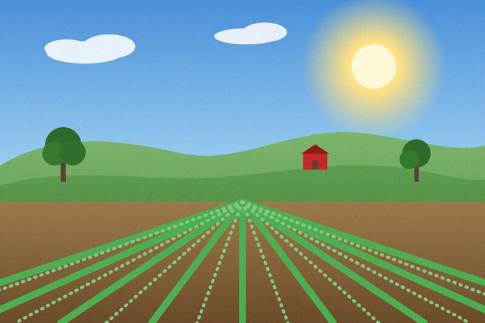
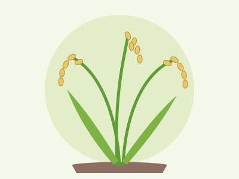

Fruits de saison
Mangues, papayes et ananas cueillis à maturité.

Chaque samedi matin, une vingtaine de producteurs de la vallée vendent directement leurs récoltes : pas d'intermédiaire, des prix justes et des produits cueillis la veille.
Comment venir ?
Mangues, papayes et ananas cueillis à maturité.

Tomates, gombos et aubergines des jardins voisins.

Maïs, mil et farines moulues sur place.

Piment frais ou séché, gingembre, poivre de Guinée.

Démonstration : de la cabosse à la tablette, à 10 h.

Riz paddy et riz décortiqué, vendu au kilo.
Tous les samedis, de 7 h à 13 h, même pendant la saison des pluies.
Place du marché, à côté de l'école. Parking vélos et motos gratuit.
Espèces et paiement mobile acceptés sur tous les stands.